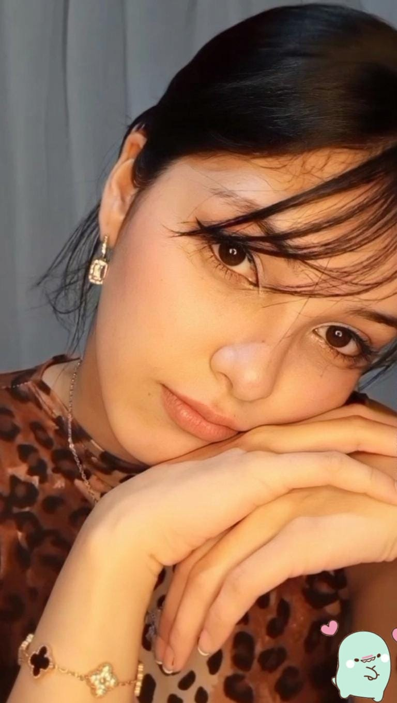
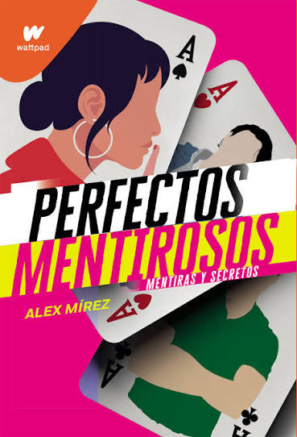
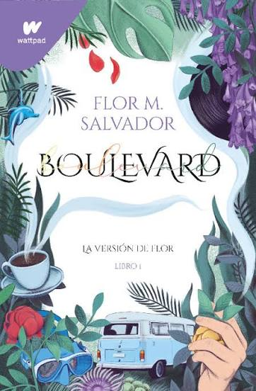
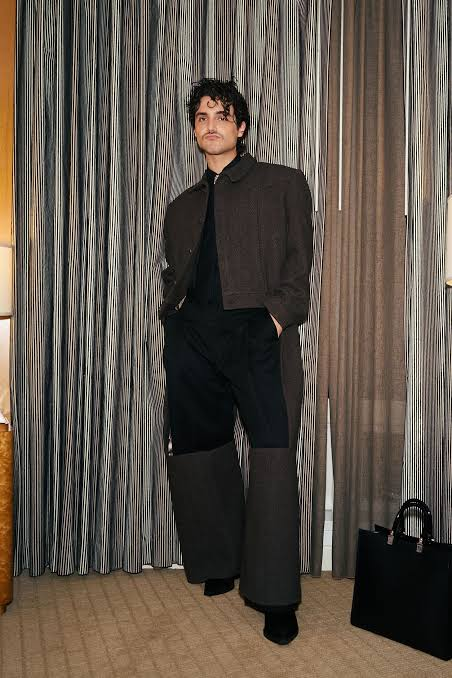
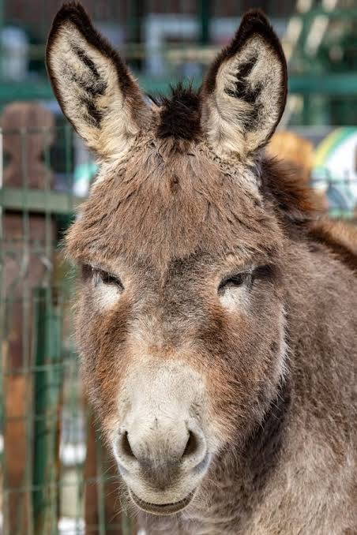
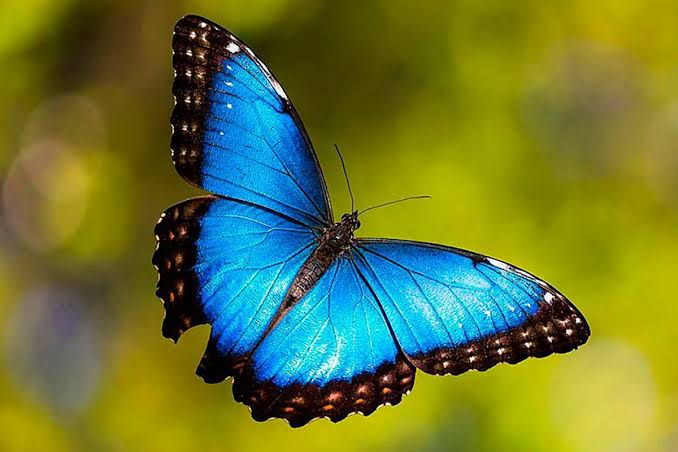
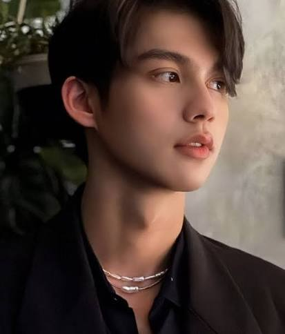
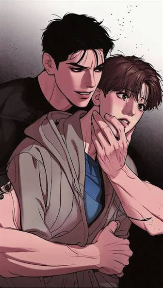
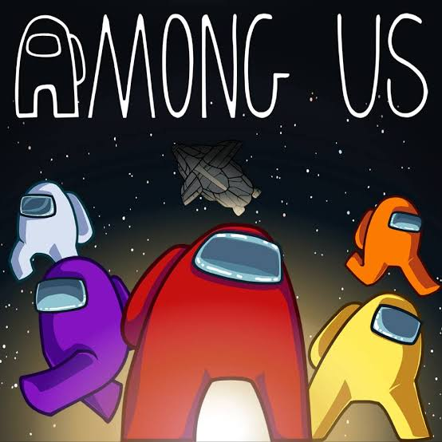
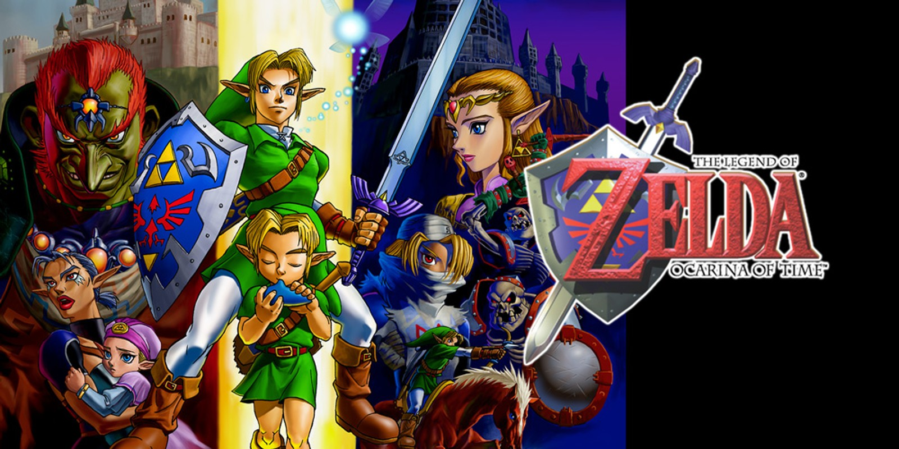

Ella es Andy Yenari Vásquez. Primero que todo, ella es una mujer muy maravillosa. A primera vista es muy hermosa y, si la miras otra vez, vas a llegar a la misma conclusión, porque la neta es muy hermosa.

A ella le gusta leer. Algunos libros que ella ha leído son Perfectos mentirosos, Boulevard, etc. A ella también le gusta la música. Uno de sus artistas favoritos es Humbe, que, por cierto, es el único artista que me sé, porque ella es muy reservada con su música, porque siente que es de ella.



Su animal favorito está entre el burro y la mariposa morpho, pero yo siento que el burro es su favorito. Su color favorito es el azul y ahora está entre una lucha entre el azul y el verde, aunque el azul es superior.


Su personaje favorito es Sarawat, interpretado por Vachirawit. También le gustan algunos mangas de gays y, por cierto, ama a los gays.


A ella también le gusta jugar, y unos de sus juegos favoritos, y en los cuales, por cierto, es muy buena, son Among Us y, recientemente, su juego favorito: Zelda: Ocarina of Time.


Aún me falta decir mucho sobre ella, pero quiero que sepas que, como dije al principio, ella es una mujer muy maravillosa, hermosa, original, graciosa, amable, responsable. Mejor dicho, ella es todo lo bueno para mí; Pero bueno, más adelante les diré qué es para mí. Por ahora es todo, aunque lo que dije fue por encima. Gracias por todo.